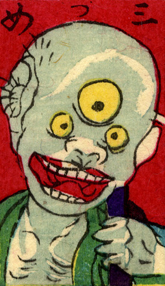

三つ目；ミツメ，入道；ニュウドウ

三つ目の化物。額の目がやや大きい。坊主頭で緑の着物を身につけ、肩に何か担いでいる。
著作者：豊貞／出典：親書誌：U426_nichibunken_0225：大新板ばけ物ずくし；オオシンバンバケモノズクシ／日付：2010／資源識別子：U426_nichibunken_0225_0028_0000
Copyright (c)2010- International Research Center for Japanese Studies, Kyoto, Japan. All rights reserved.